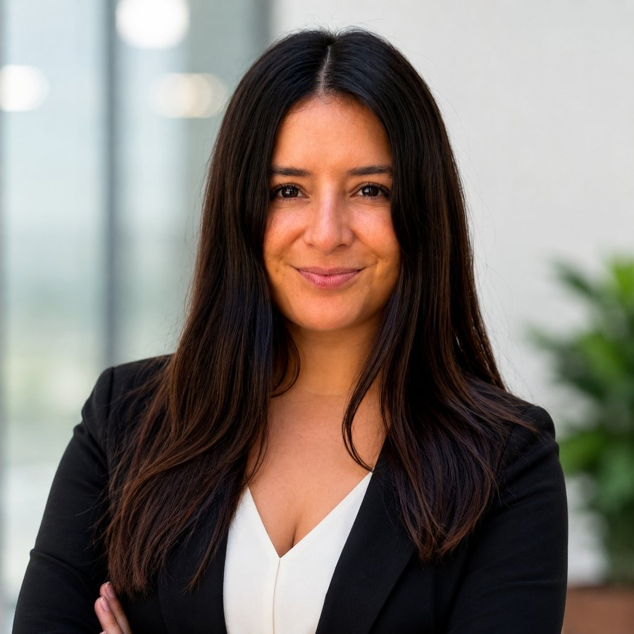
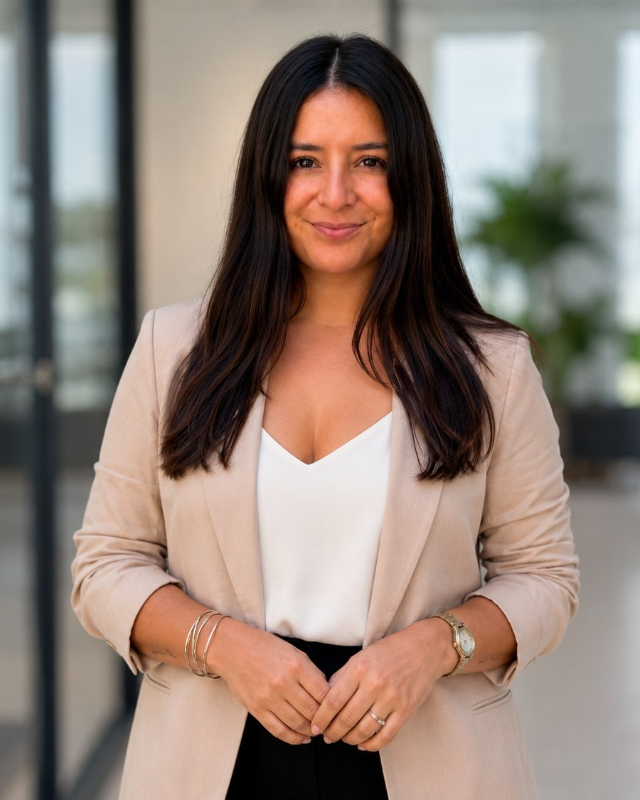

EMEA — Consultoría PMO & PortfolioEMEA — PMO Consulting & Portfolio

Ayudo a empresas tech en crecimiento a recuperar el control de proyectos que se están retrasando para que puedan dejar de perder dinero por retrasos y mantener a sus equipos enfocados.I help growing tech companies regain control of delayed projects so they can stop losing money on delays and keep their teams focused.
Senior Project Manager & PMO LeaderSenior Project Manager & PMO Leader
Trabajo con empresas tecnológicas en crecimiento — integradoras cloud, consultoras IT, SaaS, ingenierías y equipos de producto — que ya facturan, pero cuyos proyectos se les fueron de las manos: plazos que se corren, equipos desalineados, y nadie con la foto completa. I work with growing tech companies — cloud integrators, IT consultancies, SaaS companies and product teams — that already have revenue, but whose projects have gotten away from them: slipping deadlines, misaligned teams, and no one holding the full picture.
En 48h identifico dónde se está perdiendo el control: alcance, dependencias, comunicación o gobierno.In 48h I identify exactly where control is slipping: scope, dependencies, communication or governance.
Priorizo lo crítico y le devuelvo al sponsor visibilidad real, con un reporting que se lee en 5 minutos.I prioritise what's critical and give the sponsor real visibility back, with reporting that reads in 5 minutes.
Entro como PM/PMO interina el tiempo necesario, o dejo el marco instalado para que tu equipo lo sostenga.I step in as interim PM/PMO for as long as needed, or leave the framework installed for your team to run.
Te devuelvo el proyecto encaminado, con gobierno propio — sin dependencia de mí.You get the project back on track, with its own governance — not dependent on me.
Framework de entrega para proyectos ágiles e híbridos. Cinco fases de gestión de proyectos, con la IA como apoyo y criterio humano en cada decisión. Delivery framework for agile and hybrid projects. Five project delivery phases, with AI in support and human judgment behind every decision.
Acuerdo (SOW), charter vivo, kickoff, rolesAgreement (SOW), living charter, kickoff, roles
Borradores rápidos y un artefacto siempre actualizadoFast drafts and an always-current shared artifact
Roadmap, backlog, presupuesto, plan de riesgos y comunicaciónRoadmap, backlog, budget, risk and communication plan
Escenarios y dependencias antes de empezarScenarios and dependencies before starting
Updates async por stakeholder, actas, comitésAsync updates per stakeholder, meeting minutes, committees
Información a cada uno según lo que necesita, sin reuniones de másEach person gets the information they need, without extra meetings
Dashboard, RAID vivo, presupuesto, control de cambiosDashboard, live RAID log, budget, change control
Alertas tempranas y análisis de impactoEarly alerts and impact analysis
Reporte de cierre, lessons learned, propuestas siguientesClosing report, lessons learned, next proposals
Aprendizaje que se convierte en acciones con seguimientoLearning that turns into actions with follow-up
Diagnóstico completo de uno o más proyectos en caos, con plan de acción priorizado.Full diagnosis of one or more projects in chaos, with a prioritised action plan.
Monto la cadencia, el reporting y la gobernanza de tu operación de proyectos en 1 semana.I set up the cadence, reporting and governance for your project operation in 1 week.
Capacidad de dirección de proyecto por horas, sin contratar a tiempo completo.Project-management capacity by the hour, without a full-time hire.
Convierto tus notas y actas de reuniones en un status report ejecutivo + RAID log priorizado, en 48h.I turn your meeting notes and updates into an executive status report + a prioritised RAID log, in 48h.
90 minutos para destrabar una decisión o un problema puntual de proyecto. Entregable: un reporte en 24h.90 minutes to unblock a stuck decision or a specific project problem. Deliverable: a report within 24h.
Dirección de PMO part-time y mes a mes: gobierno, reporting ejecutivo y visibilidad continua, sin el costo de un cargo full-time.Part-time, month-to-month PMO leadership: governance, executive reporting and ongoing visibility, without the cost of a full-time hire.
Cuéntame qué se está retrasando y por qué.Tell me what's slipping, and why.
Sin sorpresas: sabes qué recibes y cuánto cuesta antes de empezar.No surprises: you know what you get and what it costs before we start.
Empezamos esa misma semana.We start that same week.
Ves el avance real, no solo el resultado final.You see real progress, not just the final result.
O seguimos en modalidad retainer, si tiene sentido para ambos.Or we continue on retainer, if it makes sense for both of us.

Daniela — ValenciaDaniela — Valencia
Construyo y escalo Oficinas de Gestión de Programas (PMO) desde cero — gobernanza, marcos de entrega, reporting ejecutivo, modelos operativos — y lidero los programas multi-país de cloud, IA y transformación digital que viven dentro de ellas. Ocho años en Europa y Latinoamérica me han enseñado que un programa se gana o se pierde en el punto donde la estrategia se encuentra con el calendario de entrega; trabajo justo ahí, como contraparte ejecutiva de quien pone el presupuesto y de quien lleva el sprint. Ingeniera Industrial, MBA Internacional, certificada PMP®. I build and scale Programme Management Offices from zero — governance, delivery frameworks, executive reporting, operating models — and run the multi-country cloud, AI and digital transformation programmes that sit inside them. Eight years across Europe and Latin America have taught me that a programme succeeds or fails at the point where strategy meets a delivery calendar; I work at that point, as the executive counterpart to the people who own the budget and the people who own the sprint board. Industrial Engineer, International MBA, PMP® certified.
Fuera de la oficinaOff the delivery floor Tenis, deportes en general y naturaleza los fines de semana, y una vida en la que conozco el mundo — moverme entre programas y ciudades ya me sale bastante natural.Tennis, sports in general and nature on weekends, and a life spent getting to know the world — moving between programmes and cities comes fairly naturally by now.
Español — nativo · Inglés — C1 · Italiano — B1 · Alemán — A2 Spanish — native · English — C1 · Italian — B1 · German — A2
Coordiné una migración cloud de OCI a GCP para un gran grupo retail latinoamericano, alineando stakeholders, proveedores y equipos técnicos en entornos de Argentina, Brasil, Perú y Chile.Coordinated an OCI-to-GCP cloud migration for a major Latin American retail group, aligning stakeholders, vendors and technical teams across environments in Argentina, Brazil, Peru and Chile.
Establecí la primera PMO de Axmos y dirigí un portafolio de 10+ programas de cloud e IA para clientes en Chile, Perú, México, Ecuador y Trinidad y Tobago.Established Axmos's first Programme Management Office and directed a portfolio of 10+ cloud and AI programmes for clients across Chile, Peru, Mexico, Ecuador and Trinidad & Tobago.
Diseñé e implementé un modelo de segmentación y adopción de clientes en 20+ cuentas enterprise y mid-market.Designed and rolled out a customer segmentation and adoption model across 20+ enterprise and mid-market accounts.
Fundé una consultora independiente de PMO y entrega IT con base en Valencia, hoy con sus primeros clientes en España y Chile.Founded an independent PMO and IT-delivery consultancy based in Valencia, now taking on its first clients across Spain and Chile.
Visita athenainnova.com →Visit athenainnova.com →Formato ilustrativo de cómo reporto y secuencio un programa multi-país — basado en la estructura real que uso, sin datos confidenciales de cliente.Illustrative format of how I report on and sequence a multi-country programme — based on the real structure I use, without confidential client data.
Fuera de la operación, escribo en LinkedIn sobre la distancia entre un proceso en el papel y un hábito en la práctica — por qué el verdadero trabajo de una PMO es cambiar cómo decide la gente, no solo qué archiva — y sobre dónde la IA realmente cambia el criterio dentro de un programa, y dónde no.Off the delivery floor, I write on LinkedIn about the distance between a process on paper and a habit in practice — why a PMO's real work is changing how people decide, not only what they file — and about where AI genuinely changes judgment inside a programme, and where it doesn't.
InsigniasBadges